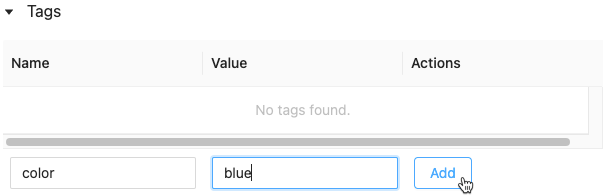

Manage training code with MLflow runs
This article describes MLflow runs for managing machine learning training. It also includes guidance on how to manage and compare runs across experiments.
An MLflow run corresponds to a single execution of model code. Each run records the following information:
Source: Name of the notebook that launched the run or the project name and entry point for the run.
Version: Notebook revision if run from a notebook in a Databricks workspace, or Git commit hash if run from Databricks Repos or from an MLflow Project.
Start & end time: Start and end time of the run.
Parameters: Model parameters saved as key-value pairs. Both keys and values are strings.
Metrics: Model evaluation metrics saved as key-value pairs. The value is numeric. Each metric can be updated throughout the course of the run (for example, to track how your model’s loss function is converging), and MLflow records and lets you visualize the metric’s history.
Tags: Run metadata saved as key-value pairs. You can update tags during and after a run completes. Both keys and values are strings.
Artifacts: Output files in any format. For example, you can record images, models (for example, a pickled scikit-learn model), and data files (for example, a Parquet file) as an artifact.
All MLflow runs are logged to the active experiment. If you have not explicitly set an experiment as the active experiment, runs are logged to the notebook experiment.
View runs
You can access a run either from its parent experiment page or directly from the notebook that created the run.
From the experiment page, in the runs table, click the start time of a run.
From the notebook, click  next to the date and time of the run in the Experiment Runs sidebar.
next to the date and time of the run in the Experiment Runs sidebar.
The run screen shows the parameters used for the run, the metrics resulting from the run, and any tags or notes. To display Notes, Parameters, Metrics, or Tags for this run, click  to the left of the label.
to the left of the label.
You also access artifacts saved from a run in this screen.
Code snippets for prediction
If you log a model from a run, the model appears in the Artifacts section of this page. To display code snippets illustrating how to load and use the model to make predictions on Spark and pandas DataFrames, click the model name.
View the notebook or Git project used for a run
To view the version of the notebook that created a run:
On the experiment page, click the link in the Source column.
On the run page, click the link next to Source.
From the notebook, in the Experiment Runs sidebar, click the Notebook icon in the box for that Experiment Run.
The version of the notebook associated with the run appears in the main window with a highlight bar showing the date and time of the run.
If the run was launched remotely from a Git project, click the link in the Git Commit field to open the specific version of the project used in the run. The link in the Source field opens the main branch of the Git project used in the run.
Add a tag to a run
Tags are key-value pairs that you can create and use later to search for runs.
From the run page, click
 if it is not already open. The tags table appears.
if it is not already open. The tags table appears.
Click in the Name and Value fields and type the key and value for your tag.
Click Add.

Reproduce the software environment of a run
You can reproduce the exact software environment for the run by clicking Reproduce Run. The following dialog appears:
With the default settings, when you click Confirm:
The notebook is cloned to the location shown in the dialog.
If the original cluster still exists, the cloned notebook is attached to the original cluster and the cluster is started.
If the original cluster no longer exists, a new cluster with the same configuration, including any installed libraries, is created and started. The notebook is attached to the new cluster.
You can select a different location for the cloned notebook and inspect the cluster configuration and installed libraries:
To select a different folder to save the cloned notebook, click Edit Folder.
To see the cluster spec, click View Spec. To clone only the notebook and not the cluster, uncheck this option.
To see the libraries installed on the original cluster, click View Libraries. If you don’t care about installing the same libraries as on the original cluster, uncheck this option.
Manage runs
Filter runs
You can search for runs based on parameter or metric values. You can also search for runs by tag.
To search for runs that match an expression containing parameter and metric values, enter a query in the search field and click Search. Some query syntax examples are:
metrics.r2 > 0.3params.elasticNetParam = 0.5params.elasticNetParam = 0.5 AND metrics.avg_areaUnderROC > 0.3To search for runs by tag, enter tags in the format:
tags.<key>="<value>". String values must be enclosed in quotes as shown.tags.estimator_name="RandomForestRegressor"tags.color="blue" AND tags.size=5Both keys and values can contain spaces. If the key includes spaces, you must enclose it in backticks as shown.
tags.`my custom tag` = "my value"
You can also filter runs based on their state (Active or Deleted) and based on whether a model version is associated with the run. To do this, make your selections from the State and Time Created drop-down menus respectively.
Download runs
Select one or more runs.
Click Download CSV. A CSV file containing the following fields downloads:
Run ID,Name,Source Type,Source Name,User,Status,<parameter1>,<parameter2>,...,<metric1>,<metric2>,...
Delete runs
You can delete runs using the Databricks Machine Learning UI with the following steps:
In the experiment, select one or more runs by clicking in the checkbox to the left of the run.
Click Delete.
If the run is a parent run, decide whether you also want to delete descendant runs. This option is selected by default.
Click Delete to confirm. Deleted runs are saved for 30 days. To display deleted runs, select Deleted in the State field.
Bulk delete runs based on the creation time
You can also use Python to bulk delete runs of an experiment that were created prior to or at a UNIX timestamp. The following client code can be run in a Databricks Notebook.
from typing import Optional
def delete_runs(experiment_id: str,
max_timestamp_millis: int,
max_runs: Optional[int] = None) -> int:
"""
Bulk delete runs in an experiment that were created prior to or at the specified timestamp.
Deletes at most max_runs per request.
:param experiment_id: The ID of the experiment containing the runs to delete.
:param max_timestamp_millis: The maximum creation timestamp in milliseconds
since the UNIX epoch for deleting runs. Only runs
created prior to or at this timestamp are deleted.
:param max_runs: Optional. A positive integer indicating the maximum number
of runs to delete. The maximum allowed value for max_runs
is 10000. If not specified, max_runs defaults to 10000.
:return: The number of runs deleted.
"""
from mlflow.utils.databricks_utils import get_databricks_host_creds
from mlflow.utils.request_utils import augmented_raise_for_status
from mlflow.utils.rest_utils import http_request
json_body = {"experiment_id": experiment_id, "max_timestamp_millis": max_timestamp_millis}
if max_runs is not None:
json_body["max_runs"] = max_runs
response = http_request(
host_creds=get_databricks_host_creds(),
endpoint="/api/2.0/mlflow/databricks/runs/delete-runs",
method="POST",
json=json_body,
)
augmented_raise_for_status(response)
return response.json()["runs_deleted"]
See the Databricks Experiments API documentation for parameters and return value specifications for deleting runs based on creation time.
Restore runs
You can restore previously deleted runs using the Databricks Machine Learning UI.
On the Experiment page, select Deleted in the State field to display deleted runs.
Select one or more runs by clicking in the checkbox to the left of the run.
Click Restore.
Click Restore to confirm. To display the restored runs, select Active in the State field.
Bulk restore runs based on the deletion time
You can also use Python to bulk restore runs of an experiment that were deleted prior to or at a UNIX timestamp. The following client code can be run in a Databricks Notebook.
from typing import Optional
def restore_runs(experiment_id: str,
min_timestamp_millis: int,
max_runs: Optional[int] = None) -> int:
"""
Bulk restore runs in an experiment that were deleted no earlier than the specified timestamp.
Restores at most max_runs per request.
:param experiment_id: The ID of the experiment containing the runs to restore.
:param min_timestamp_millis: The minimum deletion timestamp in milliseconds
since the UNIX epoch for restoring runs. Only runs
deleted no earlier than this timestamp are restored.
:param max_runs: Optional. A positive integer indicating the maximum number
of runs to restore. The maximum allowed value for max_runs
is 10000. If not specified, max_runs defaults to 10000.
:return: The number of runs restored.
"""
from mlflow.utils.databricks_utils import get_databricks_host_creds
from mlflow.utils.request_utils import augmented_raise_for_status
from mlflow.utils.rest_utils import http_request
json_body = {"experiment_id": experiment_id, "min_timestamp_millis": min_timestamp_millis}
if max_runs is not None:
json_body["max_runs"] = max_runs
response = http_request(
host_creds=get_databricks_host_creds(),
endpoint="/api/2.0/mlflow/databricks/runs/restore-runs",
method="POST",
json=json_body,
)
augmented_raise_for_status(response)
return response.json()["runs_restored"]
See the Databricks Experiments API documentation for parameters and return value specifications for restoring runs based on deletion time.
Compare runs
You can compare runs from a single experiment or from multiple experiments. The Comparing Runs page presents information about the selected runs in graphic and tabular formats. You can also create visualizations of run results and tables of run information, run parameters, and metrics.
To create a visualization:
Select the plot type (Parallel Coordinates Plot, Scatter Plot, or Contour Plot).
For a Parallel Coordinates Plot, select the parameters and metrics to plot. From here, you can identify relationships between the selected parameters and metrics, which helps you better define the hyperparameter tuning space for your models.

For a Scatter Plot or Contour Plot, select the parameter or metric to display on each axis.
The Parameters and Metrics tables display the run parameters and metrics from all selected runs. The columns in these tables are identified by the Run details table immediately above. For simplicity, you can hide parameters and metrics that are identical in all selected runs by toggling .

Compare runs from a single experiment
On the experiment page, select two or more runs by clicking in the checkbox to the left of the run, or select all runs by checking the box at the top of the column.
Click Compare. The Comparing
<N>Runs screen appears.
Compare runs from multiple experiments
On the experiments page, select the experiments you want to compare by clicking in the box at the left of the experiment name.
Click Compare (n) (n is the number of experiments you selected). A screen appears showing all of the runs from the experiments you selected.
Select two or more runs by clicking in the checkbox to the left of the run, or select all runs by checking the box at the top of the column.
Click Compare. The Comparing
<N>Runs screen appears.
Copy runs between workspaces
To import or export MLflow runs to or from your Databricks workspace, you can use the community-driven open source project MLflow Export-Import.